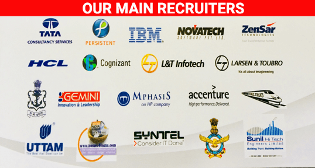

At PRMIT & R, we always believe in equipping our students with the right talent and personality to face the industry requirements. Our focus on placement centers on creating new approaches to attract the best from the industry to our campus. Department of Training and Placement provides a window of opportunities to the Students over a wide variety of Careers in a broad spectrum of Industries/Organizations in India.

The objectives of Placement & Training cell are manifold. Following few important objectives are mentioned:
- The basic objective of the training and placement department is to make the students from various disciplines, ‘industry ready’ and to provide an opportunity to the students to get placed in reputed multinationals, government jobs, NGO’s and the private sector; by adopting the multipronged strategy.
- Developing the students’ technical knowledge and soft skills to meet the corporate recruitment process.
- To motivate students to develop their overall personality in terms of career planning, goal setting and reskilling which will stand them in good stead even after getting the job.
- To motivate students aspire for higher studies and guiding them to take competitive exams such as CAT, GATE, TOEFL, GREand GMAT.
- Aiming to place the maximum number of students through campus & off-campus interviews conducted by the top notch companies.